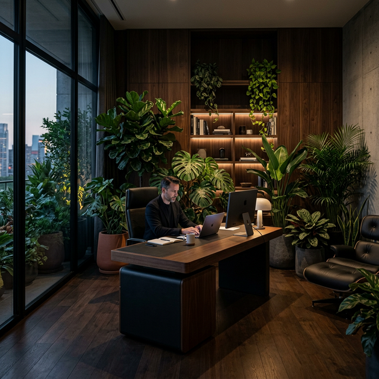
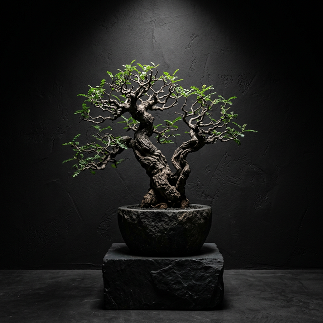
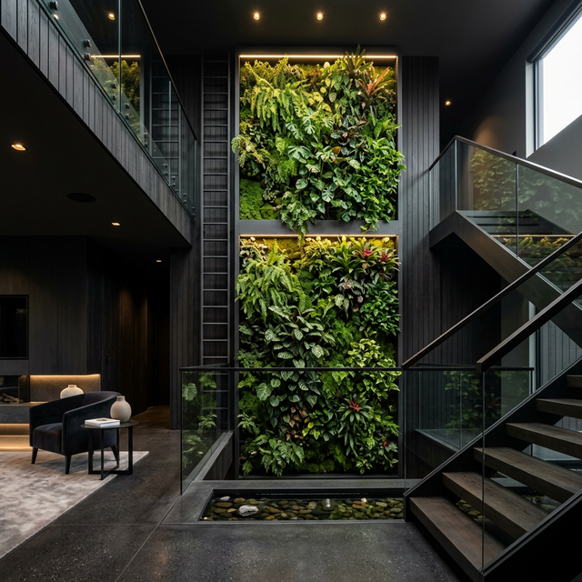

The Art of Growth in
Deep Solitude
True luxury is never rushed. In our dark nurseries, we cultivate specimens with architectural precision. Each leaf is a deliberate stroke of nature, selected not just for beauty, but for its ability to command the light and shadow of refined interiors.
Service as an Art Form
Curated Specimens
Hand-selected rare plants sourced from exclusive growers worldwide, ensuring unique character for every project.
Architectural Harmony
Botanical design that integrates seamlessly with modern architecture, respecting lines, light, and volume.
White Glove Service
Complete logistical handling, installation, and ongoing horticultural care for your living investments.
Botanical
Trends
for the
Modern Collector
An editorial exploration of nature's evolving role in high-end design.

Biophilic Workspace
Integrating verdant life into the professional sanctuary for cognitive clarity and architectural softness.
Biophilic Workspace
Read Editorial
Rare Specimen Sculptures
Curating singular botanical forms that serve as the focal point of minimalist, high-ceiling environments.
Rare Specimen Sculptures
Read Editorial
Living Walls
Vertical ecosystems that redefine internal boundaries, offering a rhythmic pulse to static architecture.